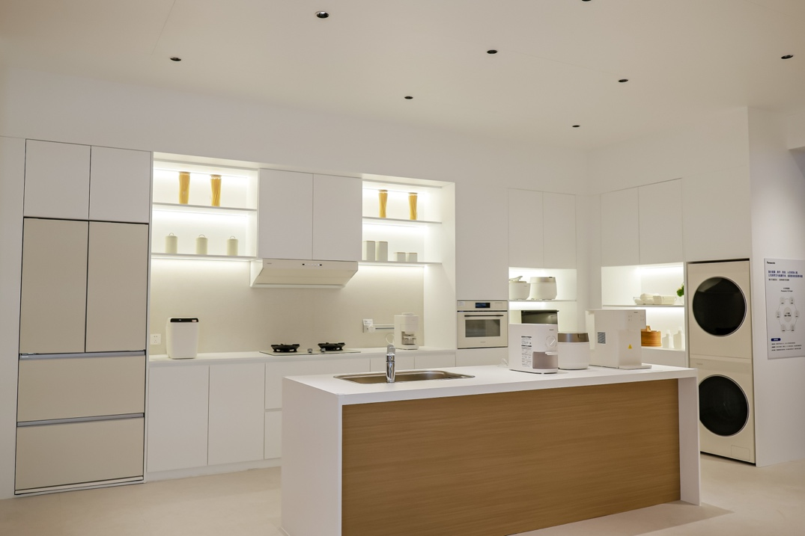

厨房智能硬件 / 智能住空间
松下把厨房放进整屋方案，环境检测贯穿改造前后
进博会新公告将厨房设备展示与WSH住空间环境检测服务放在同一套居住空间思路下。

11月6日，松下在进博会发布中国地域战略，把健康智能住空间列为三大事业领域之一。展区呈现了冰箱、烹饪设备、洗护与岛台组成的厨房空间；官方同时介绍饭光光、灵光煲等电饭煲及面向整屋的空间方案。
本届展会发布的WSH住空间环境检测服务，将空气质量、照明和水质转成可视化数据，覆盖改造前诊断、改造中方案和竣工后评估。它提供的是环境检测与改造服务思路，不能仅凭展台照片推断所有厨电已互联自动控制，也不能把品牌健康愿景当成已证实的效果。
松下中国 · 进博会地域战略与WSH发布 · 2026-11-06中国家电网 · 松下进博会报道 · 11月6日12:54发布会与官网公告：11月6日；媒体报道：12:54。WSH为企业发布的服务，未引用健康寿命提升等未经验证的宣传效果。